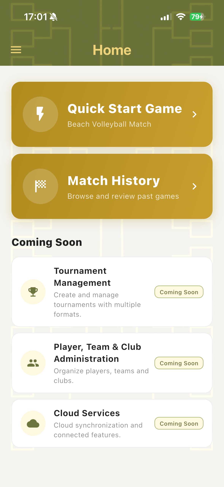
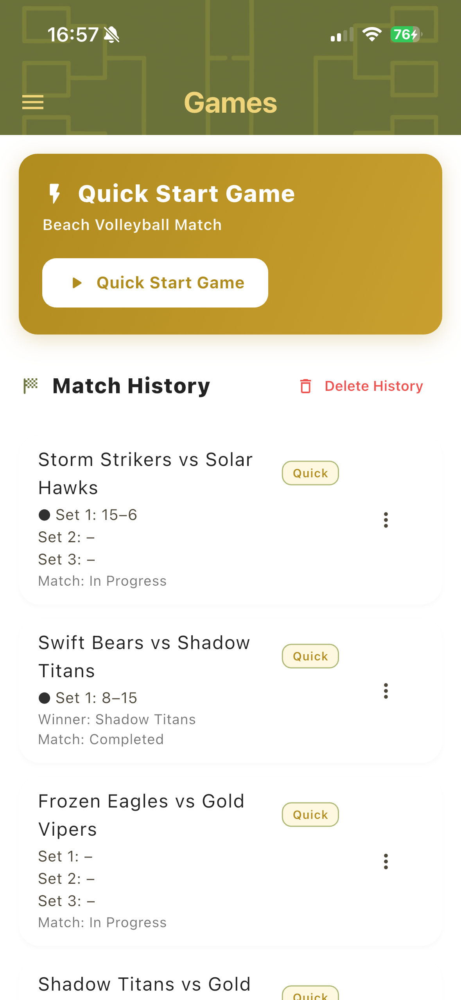
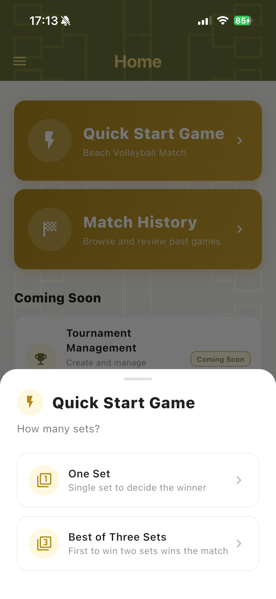
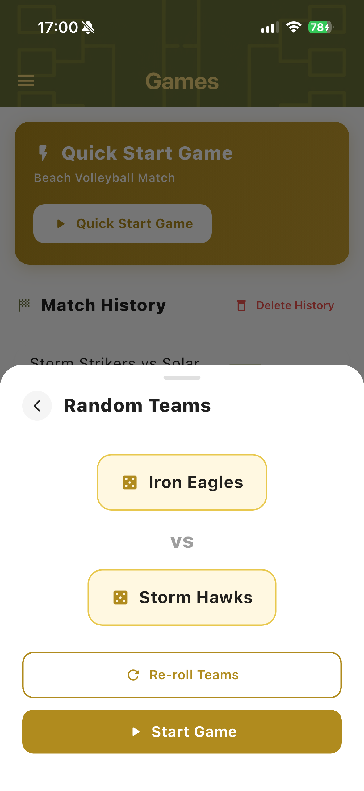
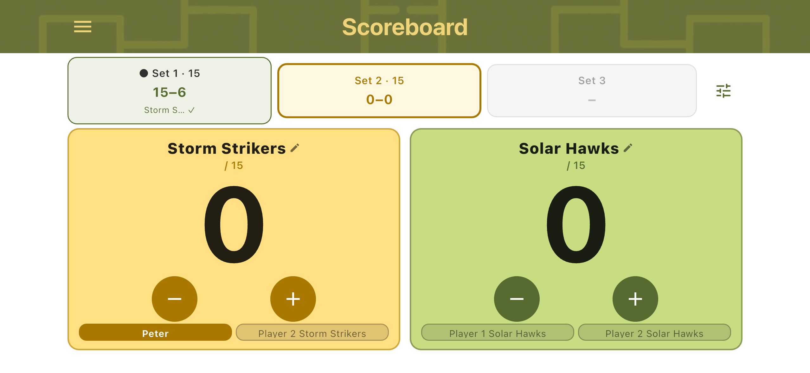
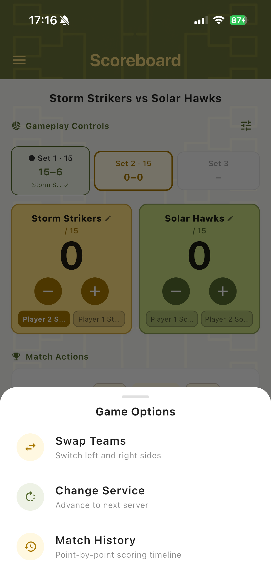
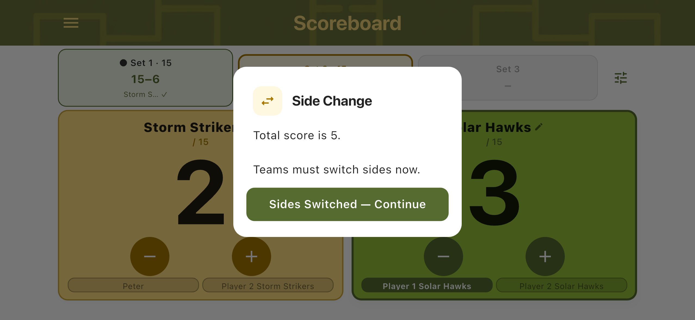
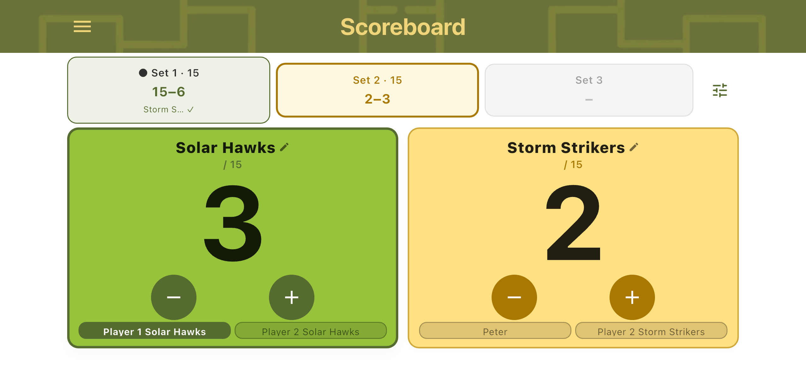
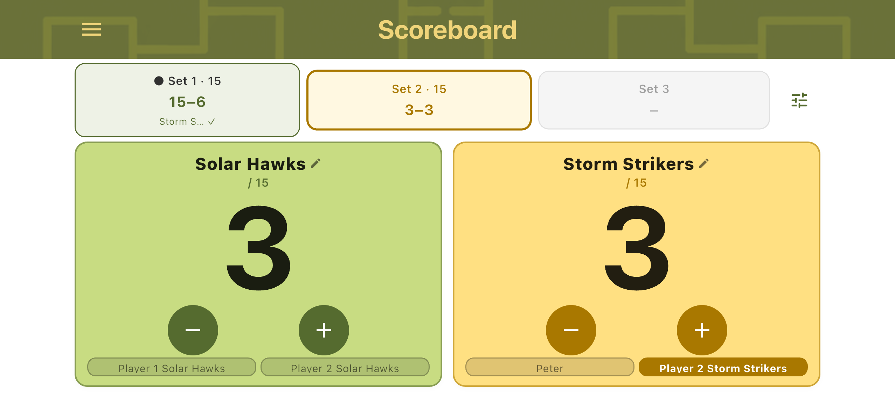
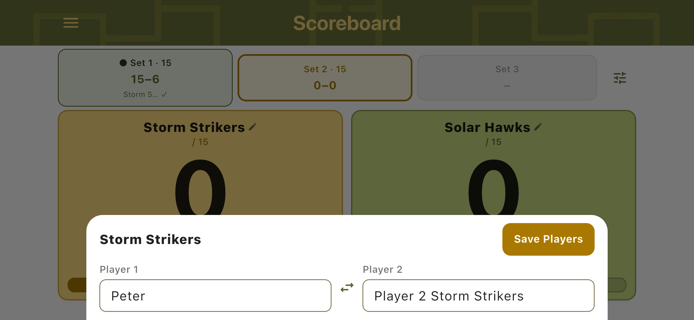

Quick Navigation
Overview
TournaQ is a beach volleyball scoring app designed for quick match setup, live scoring, match history and future tournament management.
Main App Areas

Home Screen
The Home screen is the main entry point. From here, users can access Quick Start Game, Match History and upcoming tournament-related features.

Navigation Drawer
The navigation drawer opens from the menu icon and provides access to Home, Quick Start Game, Sponsoring & Promo, Contact & About and Settings.

Games & Match History
The Games screen shows saved matches, including team names, match type, set scores, match status and the winner when completed.
Quick Start Game
Quick Start Game allows users to create a beach volleyball match quickly without complex setup.

Select Match Format
Choose between match formats such as One Set or Best of Three Sets.

Choose Teams
Select existing teams, create new teams manually or generate random teams.

Random Team Generator
Generate team names automatically, re-roll teams if needed and start the match.
Scoreboard
The Scoreboard is the main live scoring screen. It displays team names, scores, sets, player names, active player information and match actions.

Vertical Scoreboard
The vertical scoreboard provides a complete view for live scoring, including all information needed during a match.

Landscape Scoreboard
The landscape scoreboard is optimized for horizontal mobile use during live matches.

Game Options
The Game Options bottom sheet provides supporting actions such as Swap Teams, Change Service and Match History.
Match Controls
Match controls help you manage side changes, team positions and service order during live scoring.

Side Change Reminder
The side change reminder shows the current total score and instructs teams when to switch sides based on the target set score.

Swap Teams
Swap Teams changes the visual position of the two teams on the scoreboard. This is useful when teams physically change sides. This happens automatically when confirming a side change, but can also be triggered manually from the Game Options menu.

Change Service
Change Service advances the active server after a point is scored by the team currently not serving. The active player is shown with a highlighted player chip. This happens automatically, but can also be triggered manually from the Game Options menu.
Editing Players

Edit Players
Edit player names directly from the scoreboard. You can update Player 1 and Player 2, swap player positions and save the updated names.
Player Management Screenshot
Player Management
Future versions may expand player administration as part of broader tournament management.
Team Management Screenshot
Team Management
Team management will continue to evolve as TournaQ grows beyond scoring.
Common Match Workflow
- Open TournaQ.
- Tap Quick Start Game.
- Select One Set or Best of Three Sets.
- Choose existing teams, create new teams or generate random teams.
- Start the game.
- Use the plus and minus buttons to score.
- Use Game Options when needed.
- Complete the set.
- Complete the game.
- Return to Games to review match history.
Future Tournament Management
Tournament Setup Screenshot
Tournament Setup
Future development will expand TournaQ toward tournament setup and administration.
Standings Screenshot
Standings
Planned tournament functionality may include standings and competition progress tracking.
Brackets Screenshot
Brackets
Bracket management is part of the long-term direction toward full tournament management.